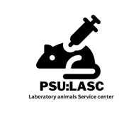

ระบบรายงานการปฏิบัติต่อสัตว์ทดลองของนักวิจัย · ศูนย์สัตว์ทดลอง มหาวิทยาลัยสงขลานครินทร์ (PSU:LASC)
Laboratory Animal Procedure Reporting System · Laboratory Animal Service Center, Prince of Songkla University
ระบบนี้ให้นักวิจัย รายงานการปฏิบัติต่อสัตว์ทดลอง ตามเลขที่โครงการวิจัยที่ได้รับอนุมัติจากคณะกรรมการ จริยธรรมการวิจัยในสัตว์ และ แจ้งเหตุฉุกเฉินหรือปัญหาสุขภาพสัตว์ ถึงทีมสัตวแพทย์ได้ทันที
The system lets researchers report procedures performed on laboratory animals under a protocol number approved by the Animal Research Ethics Committee, and raise an emergency or animal-health alert that reaches the veterinary team immediately.
| สิ่งที่ทำได้ What you can do | ใช้เมื่อไร When to use it |
|---|---|
| 📝 รายงานใหม่ New report |
เมื่อทำการุณยฆาต · เคลื่อนย้ายสัตว์ออกนอกสถานที่ · หรือสัตว์ตายระหว่างการศึกษา After euthanasia, off-site transport of animals, or an animal dying during the study. |
| 🚨 แจ้งเหตุ / สุขภาพสัตว์ Emergency / health alert |
เมื่อพบสัตว์ป่วย บาดเจ็บ หรือเหตุฉุกเฉินในห้องเลี้ยง — ถึงทีมสัตวแพทย์ทาง LINE และอีเมลทันที When you find a sick or injured animal, or any emergency in the animal room — delivered to the vets by LINE and email at once. |
| 📚 ประวัติการรายงาน History |
ดู แก้ไข พิมพ์แบบฟอร์ม PDF และส่งออก Excel เพื่อแนบเสนอคณะกรรมการฯ View, edit, print the A4 PDF form and export to Excel for submission to the committee. |
| 📊 สรุปผล Summary |
ดูจำนวนสัตว์ที่รายงานแล้ว แยกตามรายการ วิธีการ ชนิดสัตว์ และโครงการ See how many animals have been reported, broken down by procedure, method, species and protocol. |
☁ ซิงก์แล้ว และเลือกเลขที่โครงการได้
Once approved, the badge at the top right changes to ☁ ซิงก์แล้ว (synced) and you can
select your protocol numbers.| สถานะบัญชี Account status | สิ่งที่ทำได้ What is available |
|---|---|
| ⏳ รออนุมัติPending approval | บันทึกรายงานได้ (เก็บไว้ในเครื่องก่อน แล้วส่งขึ้นระบบกลางให้อัตโนมัติเมื่ออนุมัติ) · แจ้งเหตุฉุกเฉินได้ทันที ไม่ต้องรอ · แต่ยังไม่เห็นรายการเลขที่โครงการ You can save reports (kept on your device and uploaded automatically once you are approved); emergency alerts work immediately, no waiting; but the protocol list is not visible yet. |
| ✅ อนุมัติแล้วApproved | ใช้งานได้ครบ ข้อมูลซิงก์ทุกเครื่องที่เข้าสู่ระบบด้วยบัญชีเดียวกัน · เห็นเฉพาะรายงานของตนเอง Full access. Your data syncs to every device you sign in on with the same account, and you see only your own reports. |
แท็บ 「📝 รายงานใหม่」 — ทุกช่องมีภาษาอังกฤษกำกับไว้ให้แล้ว
Use the 「📝 รายงานใหม่」 (New report) tab. Every field on the form carries an English label.
| รายการ Procedure | ข้อมูลเพิ่มเติม (ช่องที่มี * ต้องกรอก) Additional details (fields marked * are required) |
|---|---|
| ⚖️ การุณยฆาต Euthanasia |
* วิธีการ เลือก 1 จาก 3 วิธี Method — choose one of three
|
| 🚚 เคลื่อนย้ายออกนอกสถานที่ Off-site transport |
* สถานที่ปลายทาง · วัตถุประสงค์ · ผู้รับผิดชอบระหว่างขนย้าย · ยานพาหนะ · ระยะเวลาเดินทาง · แผนการนำสัตว์กลับและวันที่คาดว่าจะกลับ · มาตรการดูแลสวัสดิภาพระหว่างเคลื่อนย้าย * Destination · purpose · person responsible during transport · vehicle · travel time · return plan and expected return date · welfare measures during transport. |
| 🕊️ สัตว์ตายระหว่างการศึกษา Died during the study |
* วันที่พบสัตว์ตาย · เวลาที่พบ · ผู้พบเหตุ · สาเหตุที่สงสัย · การชันสูตรซาก · อาการก่อนตาย/ผลชันสูตร · การแจ้งสัตวแพทย์ · การจัดการซาก * Date the animal was found dead · time found · who found it · suspected cause · whether a necropsy was done · signs before death / necropsy findings · whether a vet was informed · carcass disposal. |
AR-2569-0001
และพาไปที่แท็บ「📚 ประวัติการรายงาน」ทันที
After saving, the system issues a report number in the form AR-2569-0001 and takes you
straight to the 「📚 ประวัติการรายงาน」 (History) tab.VA-2569-1016-K3F7 ·
เข้ากล่องรับแจ้งของทีมสัตวแพทย์ · ส่ง LINE และอีเมล ถึงสัตวแพทย์ที่รับแจ้งระดับนั้นทันที ·
และแสดงปุ่มโทรฉุกเฉินให้กดโทรต่อได้
When you submit, the system issues an alert number such as VA-2569-1016-K3F7,
places it in the veterinary team's inbox, sends a LINE message and an email to every vet who covers that
urgency level, and shows the emergency phone button so you can call as well.ดูสถานะได้ที่รายการด้านล่างของหน้าแจ้งเหตุ
The status is shown in the list at the bottom of the alert page.
🆕 รอรับเรื่อง → 📥 รับเรื่องแล้ว → 💉 กำลังดูแลรักษา → ✅ ปิดเรื่องแล้ว New → Acknowledged → Under treatment → Closed
แท็บ 「📚 ประวัติการรายงาน」 — ท่านเห็นเฉพาะรายงานของตนเอง
The 「📚 ประวัติการรายงาน」 (History) tab — you see only your own reports.
| ปุ่ม Button | ใช้ทำอะไร What it does |
|---|---|
| 👁 ดูView | เปิดดูรายละเอียดทั้งหมดของรายงาน Opens the full details of the report. |
| พิมพ์แบบฟอร์มรายงาน A4 พร้อมช่องลงนาม ผู้รายงาน · เจ้าหน้าที่ · สัตวแพทย์/ประธาน คกส. (ในหน้าต่างพิมพ์เลือก “บันทึกเป็น PDF” ได้) Prints the A4 report form with signature blocks for the reporter, the staff member and the veterinarian / committee chair. In the print dialog you can choose "Save as PDF". | |
| ✎ แก้ไขEdit | แก้ไขรายงานที่บันทึกไว้ — ระบบจะคำนวณโควตาให้ใหม่ Edits a saved report; the approved-number balance is recalculated. |
| 🗑 ลบDelete | ลบรายงานที่บันทึกผิดหรือซ้ำ Deletes a report saved in error or by mistake twice. |
| ⬇ ส่งออก Excel (CSV)Export to Excel (CSV) | ส่งออกตามเงื่อนไขที่กรองไว้ เปิดด้วย Excel ได้ Exports whatever the current filters show; opens directly in Excel. |
| ⬇ สำรองข้อมูล (JSON)Back up (JSON) | สำรองข้อมูลในเครื่องไว้เป็นไฟล์ (แนะนำถ้ายังไม่ได้เข้าสู่ระบบ) Saves your local data to a file — recommended if you are not signed in. |
กรองรายการได้ตามโครงการ · รายการที่รายงาน · ช่วงวันที่ · และช่องค้นหา (ผู้รายงาน ชนิดสัตว์ สายพันธุ์ หมายเหตุ)
You can filter by protocol, procedure, date range, and a free-text search over reporter, species, strain and remarks.
ติดตั้งแล้วจะมีไอคอนเหมือนแอปทั่วไป เปิดได้เร็วและใช้แจ้งเหตุฉุกเฉินได้ทันที
Once installed it behaves like any other app, with its own icon — it opens faster, which matters when you need to raise an emergency alert.
| อุปกรณ์ Device | วิธีติดตั้ง How to install |
|---|---|
| Android (Chrome) | เปิดเว็บ → เมนู ⋮ → เพิ่มไปยังหน้าจอหลัก (หรือกดปุ่ม「⬇ ติดตั้งแอป」ในระบบ) Open the site → menu ⋮ → Add to Home screen (or use the 「⬇ ติดตั้งแอป」 button inside the system). |
| iPhone / iPad (Safari) | เปิดเว็บ → ปุ่มแชร์ ⬆ → เพิ่มไปยังหน้าจอโฮม Open the site → Share ⬆ → Add to Home Screen. |
| คอมพิวเตอร์ (Chrome/Edge)Desktop | กดไอคอน ⊕ ท้ายแถบที่อยู่เว็บ หรือเมนู ⋮ → ติดตั้ง Click the ⊕ icon at the end of the address bar, or menu ⋮ → Install. |
รายงานทุกครั้งที่มีการการุณยฆาต เคลื่อนย้ายสัตว์ออกนอกสถานที่ หรือสัตว์ตายระหว่างการศึกษา ควรรายงานทันทีหรือภายใน 1–2 วันทำการ เพื่อให้จำนวนสัตว์คงเหลือในระบบเป็นปัจจุบัน
Report every euthanasia, every off-site transport of animals, and every animal that dies during the study. Do it immediately, or within one to two working days, so that the remaining animal numbers in the system stay current.
ได้ — แท็บ「📚 ประวัติการรายงาน」กดปุ่ม ✎ แก้ไข หรือ 🗑 ลบ แล้วบันทึกใหม่ ระบบคำนวณโควตาให้ใหม่อัตโนมัติ
Yes. In the 「📚 ประวัติการรายงาน」 (History) tab, press ✎ to edit or 🗑 to delete and save it again. The approved-number balance is recalculated automatically.
อยู่ครบ ถ้าบัญชีได้รับอนุมัติแล้ว ข้อมูลจะซิงก์กับระบบกลางของศูนย์ฯ โดยอัตโนมัติ ถ้ายังไม่ได้เข้าสู่ระบบ ข้อมูลจะอยู่ในเครื่องนั้นเครื่องเดียว
Yes, if your account is approved — your data syncs automatically with the centre's central system. If you are not signed in, the data stays on that one device only.
ไม่หาย ระบบบันทึกในเครื่องให้ด้วย แต่ถ้าล้างข้อมูลเบราว์เซอร์หรือใช้โหมดไม่ระบุตัวตน ข้อมูลที่ยังไม่ซิงก์อาจหายได้ — แนะนำให้เข้าสู่ระบบไว้เสมอ
No — the system also stores your data on the device. But clearing browser data or using private/incognito mode can lose anything not yet synced, so it is best to stay signed in.
ยังบันทึกลงเครื่องได้ตามปกติ ระบบจะแจ้งว่าส่งขึ้นระบบกลางไม่สำเร็จ และจะส่งให้เองเมื่อกลับมาออนไลน์แล้วเปิดระบบอีกครั้ง (ยกเว้นรูปภาพแนบ ซึ่งต้องมีอินเทอร์เน็ตขณะส่ง)
You can still save normally. The system tells you the upload failed and sends it automatically the next time you open the system while online. Photo attachments are the exception — they need a connection at the time you submit.
หลังกดส่ง ระบบจะแสดงผลว่าแจ้งทาง LINE และอีเมลสำเร็จกี่ช่องทาง ถ้าขึ้นว่าไม่สำเร็จ ให้กด 「✉ เปิดร่างอีเมล」 แล้วกดส่ง และโทรแจ้งโดยตรงในกรณีวิกฤต
After you submit, the system reports how many LINE and email channels succeeded. If it reports a failure, press 「✉ เปิดร่างอีเมล」 (Open a draft email) and send it — and in a critical case, phone the vet directly.
ไม่ได้ ระบบนี้แยกฐานข้อมูลและบัญชีผู้ใช้ของตนเอง ต้องลงทะเบียนใหม่ในระบบนี้
No. This system has its own separate database and user accounts, so you need to register here again.
สอบถามการใช้งานระบบ การอนุมัติบัญชี หรือการนำเข้าเลขที่โครงการ — ติดต่อเจ้าหน้าที่ศูนย์สัตว์ทดลอง มหาวิทยาลัยสงขลานครินทร์ · อีเมล psu.labanimals@gmail.com
For questions about using the system, account approval or importing a protocol number, contact the staff of the Laboratory Animal Service Center, Prince of Songkla University · email psu.labanimals@gmail.com
เบอร์โทรฉุกเฉินของสัตวแพทย์แสดงเป็นปุ่มสีแดงอยู่บนหน้า「🚨 แจ้งเหตุ / สุขภาพสัตว์」ในระบบ (กดที่ปุ่มเพื่อโทรจากมือถือได้ทันที)
The veterinarians' emergency numbers appear as red buttons on the 「🚨 แจ้งเหตุ / สุขภาพสัตว์」 (Alert) page inside the system — tap one to call straight from your phone.
เอกสารอื่น / Other documents: คู่มือฉบับเต็ม (รวมส่วนเจ้าหน้าที่) · วิธีติดตั้งเป็นแอป